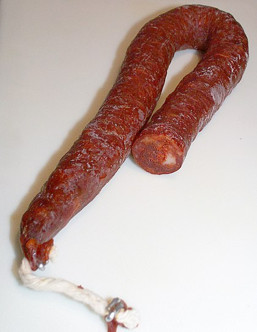

Le chorizo, également appelé txorizo (en basque) ou chouriço (en portugais) est un saucisson originaire d'Espagne et du Portugal fabriqué à partir de viande de porc ou d'un mélange de porc ou de bœuf, assaisonné avec du sel et du pimentón espagnol, une variété de paprika, qui lui donne sa couleur rouille et son goût légèrement fruité.
Connu depuis le XVIe siècle, il en existe beaucoup de sortes différentes, plus ou moins épicées, et il constitue un des aliments phares de la gastronomie espagnole et de la gastronomie portugaise.
Il est parfois relevé d'une pointe d'origan. Sa forme peut être soit allongée, fine et repliée, s'il est fait dans un intestin grêle ; soit plus large et alors droite, si on a utilisé le gros intestin.
